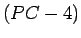

Next: การจัดการกับการ Write
Up: แนวคิดของหน่วยความจำแคช
Previous: การหาตำแหน่งของแอดเดรสในแคชในกรณีที่หนึ่ง Block มีหลาย Word
Contents
Index
ในกรณีที่ Cache Hit โปรเซสเซอร์จะทำการอ่านตามปกติ ถ้าเกิด Cache Miss เริ่มจากชุดควบคุมหน่วยความจำตรวจพบการ Miss และทำการ Fetch ข้อมูลที่ต้องการจากหน่วยความจำ ในกรณีที่เกิด Cache Miss โปรเซสเซอร์จะทำการ Stall ไพพ์ลายน์ ทั้งโปรเซสเซอร์เพื่อรอข้อมูลจากหน่วยความจำในลำดับต่อไป โดยขั้นตอนการทำงานมีดังต่อไปนี้
- ส่ง PC ที่ชี้ตำแหน่งคำสั่งปัจจุบัน  ไปยังหน่วยความจำ
- ส่งสัญญาณในการอ่านหน่วยความจำ และรอผล
- เขียนลงใน Cache โดยนำข้อมูล และ Tag ใส่ในตำแหน่งที่เหมาะสม และตั้งค่า Valid Bit
- ทำการ Restart คำสั่งใหม่จากแรกเริ่ม
Vara Varavithya
2005-08-18